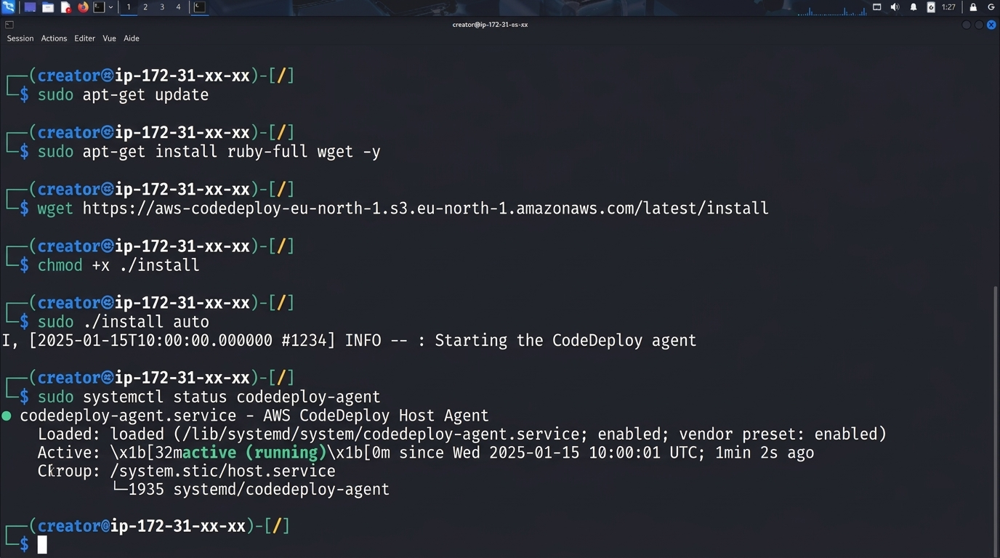

République du Sénégal
Ministère de l'Enseignement Supérieur et de la Recherche
Direction Générale de l'Enseignement Supérieur

Rapport DevOps — AWS CodeDeploy
Présenté par : Ibrahima Khalilou Thiam
Master 2 Génie Logiciel UDB
Matricule 003
À M. Massamba LO
Année académique 2025
1. Objectif
AWS CodeDeploy est un service de déploiement automatisé qui déploie automatiquement le
code sur des instances EC2, des serveurs on-premises ou des fonctions Lambda. Il
gère les déploiements progressifs (blue/green, in-place) avec rollback automatique en
cas d'échec.
- Installer l'agent CodeDeploy sur une instance EC2.
- Comprendre et écrire le fichier
appspec.yml.
- Créer une application et un groupe de déploiement.
- Déployer une application avec rollback automatique.
Déploiement : CodeDeploy prend le code source, l'empaquette en un
revision (fichier .zip ou .tgz), puis exécute les scripts définis dans
appspec.yml sur les instances cibles.
2. Comprendre appspec.yml
Le fichier appspec.yml (pour les déploiements EC2/on-premises) définit la
structure du déploiement, les fichiers à copier et les scripts de lifecycle hooks.
Format d'un appspec.yml pour EC2/On-Premises :
version: 0.0
os: linux
files:
- source: /target/myapp.jar
destination: /opt/myapp/
- source: /scripts/
destination: /opt/myapp/scripts/
hooks:
BeforeInstall:
- location: scripts/before-install.sh
timeout: 300
run-as: root
ApplicationStop:
- location: scripts/stop-app.sh
timeout: 60
run-as: root
ApplicationStart:
- location: scripts/start-app.sh
timeout: 60
run-as: root
ValidateService:
- location: scripts/health-check.sh
timeout: 60
run-as: root
| Hook |
Description |
BeforeInstall |
Avant l'installation des fichiers (dépendances système, nettoyage). |
ApplicationStop |
Arrête l'ancienne version de l'application. |
ApplicationStart |
Démarre la nouvelle version de l'application. |
ValidateService |
Vérifie que l'application répond correctement. |
Timeout : Chaque hook a un délai d'expiration (timeout). Si le script
ne se termine pas dans ce délai, le déploiement est marqué comme échoué et un rollback
est déclenché.
3. Installation de l'agent CodeDeploy
L'agent CodeDeploy doit être installé sur chaque instance EC2 qui recevra des
déploiements.
# Ubuntu / Debian
sudo apt update
sudo apt install -y ruby wget
cd /home/ubuntu
wget https://aws-codedeploy-us-east-1.s3.amazonaws.com/latest/install
sudo chmod +x ./install
sudo ./install auto
sudo systemctl start codedeploy-agent
sudo systemctl enable codedeploy-agent
# Amazon Linux 2
sudo yum update -y
sudo yum install -y ruby wget
cd /home/ec2-user
wget https://aws-codedeploy-us-east-1.s3.amazonaws.com/latest/install
sudo chmod +x ./install
sudo ./install auto
sudo systemctl start codedeploy-agent
sudo systemctl enable codedeploy-agent
# Vérifier le statut de l'agent
sudo systemctl status codedeploy-agent
# Vérifier la version
sudo /opt/codedeploy-agent/bin/CodedeployAgent.rb version

Important : L'agent CodeDeploy nécessite que l'instance ait le rôle IAM
AWSCodeDeployRole attaché. Sans cela, l'agent ne pourra pas récupérer les
révisions de déploiement.